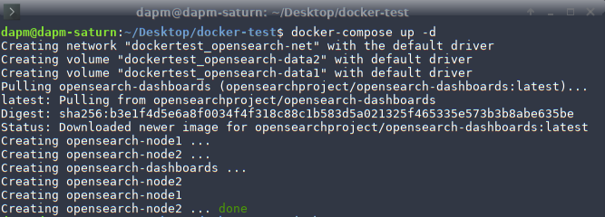
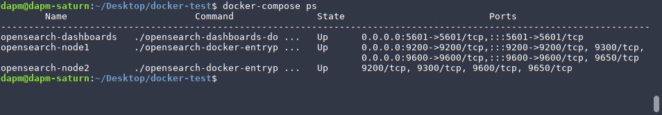

opensearch
Página de referencia (instrucciones):
https://opensearch.org/docs/latest/install-and-configure/install-opensearch/docker/
1. Install docker
Información del equipo:
lscpu
Información del equipo:
lsb_release -a
Instalar docker:
sudo apt update
sudo apt install docker.io docker-compose
2. Disable memory paging and swapping performance on the host to improve performance.
sudo swapoff -a
3. Increase the number of memory maps available to OpenSearch.
# Edit the sysctl config file sudo vi /etc/sysctl.conf # Add a line to define the desired value # or change the value if the key exists, # and then save your changes. vm.max_map_count=262144 # Reload the kernel parameters using sysctl sudo sysctl -p # Verify that the change was applied by checking the value cat /proc/sys/vm/max_map_count
4. Run OpenSearch in a Docker container
- Descargar (pull) las imágenes
docker pull opensearchproject/opensearch:latest
docker pull opensearchproject/opensearch-dashboards:latest
- Correr openSearch en un (single-node) container:
# This command maps ports 9200 and 9600, sets the discovery type to "single-node" and requests the newest image of OpenSearch docker run -d -p 9200:9200 -p 9600:9600 -e "discovery.type=single-node" opensearchproject/opensearch:latest
- Enviar un request al puerto 9200 para verificar que el container está corriendo:
curl https://localhost:9200 -ku 'admin:admin'
- Respuesta
{
"name" : "0e7b776914ed",
"cluster_name" : "docker-cluster",
"cluster_uuid" : "_wRSEJGcQD21_3nmXNJ10g",
"version" : {
"distribution" : "opensearch",
"number" : "2.8.0",
"build_type" : "tar",
"build_hash" : "db90a415ff2fd428b4f7b3f800a51dc229287cb4",
"build_date" : "2023-06-03T06:24:25.112415503Z",
"build_snapshot" : false,
"lucene_version" : "9.6.0",
"minimum_wire_compatibility_version" : "7.10.0",
"minimum_index_compatibility_version" : "7.0.0"
},
"tagline" : "The OpenSearch Project: https://opensearch.org/"
}
5. Deploy an OpenSearch cluster using Docker Compose
En este paso utilizaremos el archivo de ejemplo docker-compose.yml:
version: '3'
services:
opensearch-node1: # This is also the hostname of the container within the Docker network (i.e. https://opensearch-node1/)
image: opensearchproject/opensearch:latest # Specifying the latest available image - modify if you want a specific version
containername: opensearch-node1
environment:
- cluster.name=opensearch-cluster # Name the cluster
- node.name=opensearch-node1 # Name the node that will run in this container
- discovery.seedhosts=opensearch-node1,opensearch-node2 # Nodes to look for when discovering the cluster
- cluster.initialclustermanagernodes=opensearch-node1,opensearch-node2 # Nodes eligible to serve as cluster manager
- bootstrap.memorylock=true # Disable JVM heap memory swapping
- "OPENSEARCHJAVAOPTS=-Xms512m -Xmx512m" # Set min and max JVM heap sizes to at least 50% of system RAM
ulimits:
memlock:
soft: -1 # Set memlock to unlimited (no soft or hard limit)
hard: -1
nofile:
soft: 65536 # Maximum number of open files for the opensearch user - set to at least 65536
hard: 65536
volumes:
- opensearch-data1:/usr/share/opensearch/data # Creates volume called opensearch-data1 and mounts it to the container
ports:
- 9200:9200 # REST API
- 9600:9600 # Performance Analyzer
networks:
- opensearch-net # All of the containers will join the same Docker bridge network
opensearch-node2:
image: opensearchproject/opensearch:latest # This should be the same image used for opensearch-node1 to avoid issues
containername: opensearch-node2
environment:
- cluster.name=opensearch-cluster
- node.name=opensearch-node2
- discovery.seedhosts=opensearch-node1,opensearch-node2
- cluster.initialclustermanagernodes=opensearch-node1,opensearch-node2
- bootstrap.memorylock=true
- "OPENSEARCHJAVAOPTS=-Xms512m -Xmx512m"
ulimits:
memlock:
soft: -1
hard: -1
nofile:
soft: 65536
hard: 65536
volumes:
- opensearch-data2:/usr/share/opensearch/data
networks:
- opensearch-net
opensearch-dashboards:
image: opensearchproject/opensearch-dashboards:latest # Make sure the version of opensearch-dashboards matches the version of opensearch installed on other nodes
containername: opensearch-dashboards
ports:
- 5601:5601 # Map host port 5601 to container port 5601
expose:
- "5601" # Expose port 5601 for web access to OpenSearch Dashboards
environment:
OPENSEARCHHOSTS: '["https://opensearch-node1:9200","https//opensearch-node2:9200"]' # Define the OpenSearch nodes that OpenSearch Dashboards will query
networks:
- opensearch-net
volumes:
opensearch-data1:
opensearch-data2:
networks:
opensearch-net:
- creando el container (detached mode):
docker-compose up -d

- verificando que el container esta funcionando:

- Accediendo a
https://localhost:5601(username: admin, password: admin)
- opensearch dashboards pantalla de bienvenida: